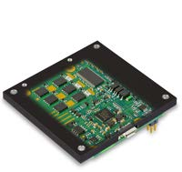

EposLib#
A C++ API for maxon EPOS4 positioning controllers over CANopen.
EposLib drives maxon EPOS4 positioning controllers - the digital servo controllers maxon
makes for its brushed DC and brushless EC motors - over CANopen (CiA 301 / CiA 402),
built on Lely CANopen. It is plain CMake with no ROS
dependency, yet it builds under colcon like any other package, so it fits a ROS 2
workspace without tying the library to one.
The API is device-oriented: a CanBus owns the CANopen master, and each drive is an
Epos4 constructed against it with its node-ID.

Download ZIP GitHub Get started ROS 2
cd ~/ros2_ws/src
git clone https://github.com/Imcab/EposLib.git
vcs import . < EposLib/epos.repos
cd .. && colcon build --packages-up-to eposlib
git clone https://github.com/Imcab/ros2units.git
git clone https://github.com/Imcab/EposLib.git
cmake -S EposLib -B build -DCMAKE_PREFIX_PATH=$PWD/ros2units
cmake --build build -j
docker run -it --rm --network host -v ~/ros2_ws:/root/ros2_ws osrf/ros:humble-desktop bash
apt update && apt install -y ros-humble-lely-core-libraries python3-vcstool
Unofficial
EposLib is an independent open-source project. It is not made, endorsed or supported by maxon. "maxon", "EPOS4" and "EPOS Studio" are trademarks of maxon international ltd.; the logo, product photos and manual figures in this documentation are © maxon and are reproduced only to identify and explain the hardware, with their source given under each one. For maxon's own documentation and software, see maxongroup.com.
See it move#
A motor simulated in your browser with the same laws the EPOS4 runs - an inertia, friction, a current limit, the back-EMF voltage limit, and the PI / PID controllers of Control loops. Pick a mode: in the profile mode the drive plans the motion, in the cyclic ones your program sends a point every 10 ms.
Source on GitHub · Changelog · License: Apache-2.0
What it does#
Control modes#
| Mode | How | Trajectory generated by |
|---|---|---|
| Profile Position (PPM) | SetControl(controls::ProfilePosition{...}) |
the drive |
| Profile Velocity (PVM) | SetControl(controls::ProfileVelocity{...}) |
the drive |
| Cyclic Synchronous Position (CSP) | EnterCyclicPositionMode() + StageTargetPosition() |
your loop |
| Cyclic Synchronous Velocity (CSV) | EnterCyclicVelocityMode() + StageTargetVelocity() |
your loop |
| Cyclic Synchronous Torque (CST) | EnterCyclicTorqueMode() + StageTargetTorque() |
your loop |
| Homing | Home(controls::Homing{...}), SetPosition(...) |
the drive |
The PPM setpoint handshake is done for you. The cyclic modes are lock-free: setpoints are staged into atomics and published by the bus thread on the next SYNC, so a control loop never blocks on the bus. Each cyclic mode starts from where the axis is - torque mode starts at the torque the axis is producing, so a loaded joint is not dropped.
Real units#
Tell the device about the encoder and the gearbox once, then command and read in physical units instead of encoder counts:
motor.SetMechanism(4096, 1.0 / 100.0); // 4096 quadcounts per turn, 1:100 gearbox
motor.SetControl(epos4::controls::ProfilePosition{}.WithPosition(90_deg));
motor.StageTargetVelocity(15_rpm); // at the output
motor.StageTargetTorque(0.5_Nm); // at the motor shaft
Raw drive units (quadcounts, rpm, thousandths of rated torque) work everywhere too.
Configuration#
Every configuration field is optional, and only the fields you set are written - a partly filled configuration cannot wipe tuned gains. Each group can also be read back from the drive.
epos4::configs::Epos4Configuration cfg;
cfg.limits.maxMotorSpeed = 3000;
cfg.motionProfile.profileAcceleration = 2000;
cfg.velocityControl.p = 150000;
motor.GetConfigurator().Apply(cfg);
motor.GetConfigurator().Save(); // persist across power cycles
Groups cover the motor, gearbox, encoders, current / velocity / position controllers, motion profile, limits, homing, stop options, holding brake, digital and analog I/O, supply and thermal protection, and communication. Objects the manual only allows in «Power Disable» are refused while the motor is powered, before anything is written.
Telemetry#
Status signals are cached and refreshed explicitly, so a getter never hides bus traffic. When PDOs are mapped, a refresh costs nothing.
motor.GetPosition().Refresh().GetValue(); // quadcounts
motor.GetSupplyVoltage().Refresh().GetValue(); // volts
motor.GetMotorI2tPercent().Refresh(); // above 100: the drive is limiting current
signals::RefreshAll(...) refreshes signals from several drives concurrently.
Diagnostics#
DescribeLastError()renders the fault with the cause, effect and recovery from chapter 7 of the firmware specification - all 73 device error codes.SetEmergencyCallback()delivers EMCY frames as they arrive, without polling.ClearFault()performs the recovery each fault needs, including the NMT reset communication that a lost heartbeat requires.CheckPdoMapping()compares the drive's PDO mapping with what the master expects and lists every difference.GetBootStatus()reports how the master's boot of the node went.GetIdentity()andGetErrorHistory()for the log.
I/O#
Digital inputs and outputs (limit and home switches, general purpose outputs), analog inputs and outputs in volts, and touch probe 1 to latch the exact position at an input edge.
Simulator#
epos4_sim is a CANopen slave that loads the real maxon EDS and implements the
CiA 402 state machine, PPM, CSP, CSV, CST and homing, so the whole stack can be
developed on a virtual CAN bus without hardware.
Minimal example#
#include <chrono>
#include <cstdio>
#include <thread>
#include "epos4/hardware/Epos4.hpp"
using namespace std::chrono_literals;
int main()
{
// One bus per CAN network: interface, master DCF, master node-ID.
epos4::CanBus bus{{"can0", "config/epos4_network/master.dcf", 1}};
// Declare every device BEFORE Start(): the master only routes PDOs
// to drivers registered when it boots the node.
epos4::Epos4 motor{bus, 2};
bus.Start();
if (!motor.WaitUntilReady() || !motor.Enable()) {
std::printf("%s\n", motor.DescribeLastError().c_str());
return 1;
}
motor.SetControl(epos4::controls::ProfilePosition{}
.WithPosition(50000) // quadcounts
.WithVelocity(1000) // rpm
.WithAcceleration(5000) // rpm/s
.WithDeceleration(5000));
// Target reached may still be set from before the move: wait for it to
// drop, then for it to come back.
for (int i = 0; i < 20 && motor.IsTargetReached().GetValueRefreshed(); ++i) {
std::this_thread::sleep_for(20ms);
}
while (!motor.IsTargetReached().GetValueRefreshed()) {
std::this_thread::sleep_for(10ms);
}
std::printf("reached %d qc\n", motor.GetPosition().Refresh().GetValue());
motor.Disable();
}
Link against eposlib::eposlib after find_package(eposlib). The master DCF
is generated from the network description (bus.yml) at build time; the
example network installs to share/eposlib/config/epos4_network/.
Declare devices before CanBus::Start()
A CANopen master boots each node once, at start-up, and only routes a
node's PDOs to a driver that was registered at that moment. A device
constructed after Start() answers SDO but never receives a PDO.
Getting started#
Install#
Requires ROS 2 Humble (Ubuntu 22.04) or any Linux with Lely CANopen installed.
sudo apt install ros-humble-lely-core-libraries python3-vcstool
mkdir -p ~/ros2_ws/src && cd ~/ros2_ws/src
git clone https://github.com/Imcab/EposLib.git
vcs import . < EposLib/epos.repos # pulls ros2units
cd ~/ros2_ws
source /opt/ros/humble/setup.bash
colcon build
source install/setup.bash
Bring up the CAN interface#
The example network runs at 1 Mbit/s:
sudo ip link set can0 type can bitrate 1000000
sudo ip link set can0 up
Try it without hardware#
sudo modprobe vcan
sudo ip link add dev vcan0 type vcan && sudo ip link set up vcan0
CFG=install/eposlib/share/eposlib/config/epos4_network
install/eposlib/lib/eposlib/epos4_sim $CFG/epos4.eds 2 vcan0 &
install/eposlib/lib/eposlib/api_demo $CFG/master.dcf vcan0 2
api_demo walks through the whole API: boot, PDO mapping check,
configuration, telemetry, enabling and a profile position move.
Status#
EposLib is pre-1.0: the API may still change between minor versions.
- Covered by 193 tests that need no bus and no hardware.
- Every example of this documentation is compiled and run against
epos4_simbefore it is published (scripts/check_examples.sh). - Verified end to end on a virtual CAN bus against
epos4_sim. - Cyclic Synchronous Torque has been run on a physical EPOS4 Module/Compact 50/15.
- 1.0 will follow once the cyclic path and a homing run have been exercised on a real axis.
Unreleased fixes
GetBootStatus(), restarting a bus with Stop() / Start(), and device
calls that fail with not_connected instead of crashing before
Start() arrive with
pull request #1.
Where to go next#
| Learning what the EPOS4 is and how it controls a motor | The EPOS4, Control loops |
| New to EposLib | Getting Started, then First run |
| New to CANopen or CiA 402 | Concepts |
| Setting up a robot's network | The network description, Multiple drives |
| Writing the control code | API Usage, Cyclic control |
| Something does not work | Troubleshooting |
| Looking up a code or a field | Reference |
| Copying a working program | Examples |
| Using it from ROS 2 - a node, or ros2_control | ROS 2 |
| Who made it | Authors |